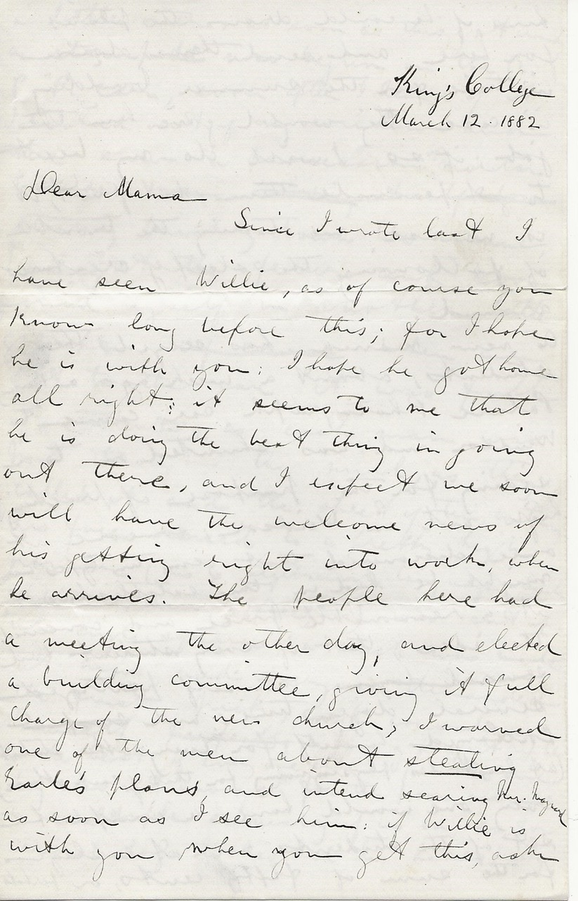

King’s College
March 12, 1882
Dear Mama
Since I wrote last I have seen Willie, as of course you know long before this; for I hope he is with you; I hope he got home all right it seems to me that he is doing the best thing in going out there, and I expect we soon will have the welcome news of his getting right into work, when he arrives.
The people here had a meeting the other day, and elected a building committee, giving it full charge of the new church, I warned one of the men about stealing Earl’s plans, and intend seeing Mr. Maynard as soon as I see him: if Willie is with you when you get this, ask him if he would draw the plans for here, and send them down in time for the summer building in case they would give him the job; if so, I will do my best to persuade them; but if not, it is no use me taking the trouble of following the sleepy creatures around.
A new mania has seized the students; about a week ago a Railway Palace Photograph car came to Windsor and was shunted onto a siding for the purpose of practicing high art in Windsor; someone at once discovered that gem tin types might be had in this establishment at a reasonable price, and conceived the idea, that if every student had himself portrayed several dozen times, and exchanged himself for every other student (at least his physiognomy for that of each other one) everyone would have a complete set of the students now at college for the sum of fifty cents, or perhaps a little over; as soon as this got around, a stampede was begun on the P.P. car, soon after I heard of it, I looked out my window and there saw a procession of mortar boarded men starting briskly down the avenue, I caught the fever and soon found myself in another little group.
When we got to the car it was full of students, as each man was put through the mill, as they called it, and the sheet of tin, containing his face raised to a pretty high power (this is algebraical language, - Sarah will explain, - (face)36 - ), was cut up into single squares, a rush was made at him, and everyone demanded the first pick, each considering himself to have a perfect right to the best of everyone else. Of course one day was not enough for the poor man to multiply so many of us in, so for several days he has had his hands pretty full.
At the first visitation we all got three dozen, price 50 cents, but in exchanging these would not go all around, so nearly everyone has paid a second visit getting a dozen more, the man has made about $25. Already out of tin types of students, besides this he has been doing them of a good many Windsor people, and also photographs, so he struck out here for certain. I will have a few over the number of students, so I will send you some. Frith gave me two I will put one in for you, and when Raven has his extra dozen taken I will get one of him for you. Well you say my letter is all tin type this week I am afraid.
Yesterday I was greatly rejoiced in getting a letter from Mr. Ross, he must be a splendid fellow, he sent me a long letter, and a book (which book is the very one Tom sent to England for, and which I got about a week ago). His letter is very nice, and I felt at once that he was a friend, he writes just as if he knew me quite well, and says he and Bob have often talked of me going up for the Gilchrist, - ‘Put in your best licks and win’ he says, and I felt on reading it, that I could work twice as hard for the encouragement from him, he gives me a good many hints, and enclosed some questions; he tells me to get Tom to bring me a book so you can mention it in your next letter, it is a guide book, and if Tom asks at Hirst Smythe & Co., Booksellers, opposite University College, Gower Street they will give him what now is considered the best one, (but not to take ‘The Exam. Directory illegible’ which I have got already). He knows Dr. Spencer and told me to remember him to him.
I wish to gracious illegible you would send me some of Bob’s last letters, I have not had one for an age. Oh wouldn’t it be splendid if, next spring, Bob Tom & I could meet in London, it is beyond hope I am afraid. Of course Willie has told you about being over at Mrs. Stone’s etc. Mrs. Stone said Mr. Stone intended coming to see me on Tuesday, as he passed through Windsor, but he could not have stayed here; I went and enquired but could not hear of him. Mrs. Whiddens will be a very nice place for Frith and I to stay at in June, when down in Halifax for the Gilchrist I hope they will be able to take us.
Everything is going along about the same as usual here; my routine is work all day long until four o’clock, then over to Lenten service at the Parish church, then for a short walk mostly into town, then plugging again in the evening. On Monday afternoon, Miss Hind came up to me after service and asked me, if I would come over there in the evening and bring Frith and Martell, I was so at a loss for a good excuse that I had to say I would come only for not being excused from chapel, which was followed by ‘come until chapel time then’, so, as I could not squirm out of it, I said I would go; Frith & Martell consented so we sallied over about half past eight, the two Miss Kings and Miss Tremaine (from Halifax) had been there to tea, and as all the men portion of the ‘Hind of Windsor’ family are away now, that accounted for us being asked over.
The Hinds very rarely have anyone there, but as Kenny (as we call him became quite a celebrity here, especially in the way of gossip) is pretty good friends with Frith and myself, we get asked over there occasionally; they have a nice house and ‘Hind of Windsor’ himself is great fun, but Mrs. Hind I don’t care much about, and the two girls, are too much of the giggling kind to be pleasant. I told you before that Ken has gone to St. John, he has two merits, one, he can play very well on the organ, the other, he can mimic, the bishop, and nearly every clergyman in Nova Scotia, to perfection. If B illegible had him, and used him as a Jack in the Box, with an arrangement to start him on any clergyman required he would be a great success.
Well I am wandering & its Sunday evening you know and I being here alone, just feel as if I was talking to you. (Back to Thursday evening at the Hinds) After chatting and one thing and another nine o’clock came, and Frith, being scholar this week, began to feel uneasy, at last he asked the company, we being all seated around the table over quartettes, to excuse his looking at the watch, on the plea of chapel, it was time to leave if we were to be home for chapel, we were unexcused, Frith being scholar had to take the roll; than on the other hand there were three females present who had to go to their homes, there were no men in the house but we three, if we left then, they would have to go home unprotected; we looked at each other, Frith rose, then a discussion was started, would it be safe to cut chapel; Vroom and King being seniors had done so last year, and the President had let it pass, we being seniors might perhaps be so dealt with; Martell asked Frith, if he (Frith) went home and took the roll did he not think that his hand might flit gently past our names, but the solemn ‘All in’ could not be pronounced to the President even if his hand did flit.
Frith at last said, he would go, and for us to stay and risk it, and he would try his best to appease the President and would be pretty sure to make it all right, so we stayed; in the morning we got Bill Frith into a corner directly after chapel to hear what the President had said. On hearing we were not in chapel ‘Oh I suppose their sick’ Frith then explained that he thought we had been out, and had not got back for chapel, ‘Oh well, see if they are in’ he saw, and the President has not thought anything more of it; if he did he would not say much, for it was our first cut, and we had a pretty good excuse for it.
Now I must stop, or you will get lost among spare scraps of paper. Remember me to all friends. Love to all & Kisses to the youngsters I remain your loving son E.A. Harris
P.S.
Raven just returned, I find I have been so lost in my letter, that I have let the fire go out
Supplement
On getting back from chapel I have remembered that I have not said a word about a very important event, and so I am going to run the risk of making my letter double weight. On Friday night at the bewitching hour a session of the King’s College Secret Tribunal was held; this august tribunal has not been in session since the trial of Graham, over a year ago, which I told you of. The 2nd year men are the ones who act in these cases, so I have nothing much to do with such things, but we members of the third year, seniors, were requested to attend this session, and act as a jury on a prosecution against a late offender; on reaching the place of meeting, the room was found to be draped with sheets so that no trace of whose room it was could be seen, at one end rose a high throne of red material, chairs etc. were arranged so as to represent a court room. Over the throne the skull and crossbones with a Latin warning underneath, figured.
The members of the tribunal were all clad in garments of the night (alias nightgowns) and college gowns over them black cotton masks, with white handkerchiefs over the head, and college caps over them; we the 3rd year men, were requested to go and stay in a illegible Room until sent for, where we found an august personage, who turned out to be the judge, his garb was a little more imposing, instead of an ordinary gown, he had a soldier’s gown, and a judge’s white wig illegible We were illegible The room was lighted by two stumps of candles which stood on the desk below the judge, all the court rose as the jury entered